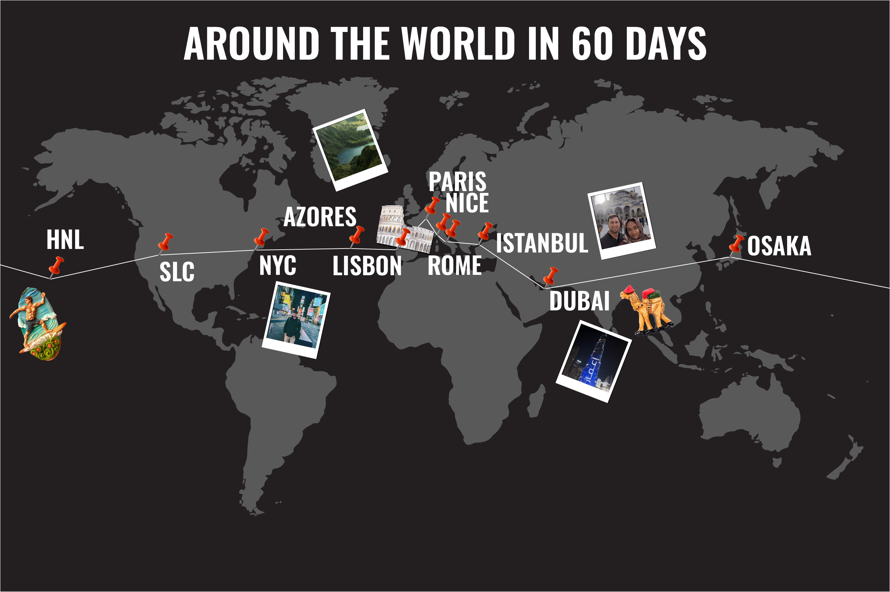

Around the World in 60 Days
Apply for a Passport Here
Video of Burj Kahlifa
Navigate to Author info
Travel Itinerary
I made a list of all the destinations my wife and me visited on our trip the last few months!
Honolulu
Osaka
Dubai
Istanbul
Rome:Day Trips
Pompeii
Amalfi Coast
Vatican City
Nice: Day Trips
Monaco
Lisbon: Day Trips
Nazare
Azores
NYC: Day Trips
Long Island
SLC
Honolulu
